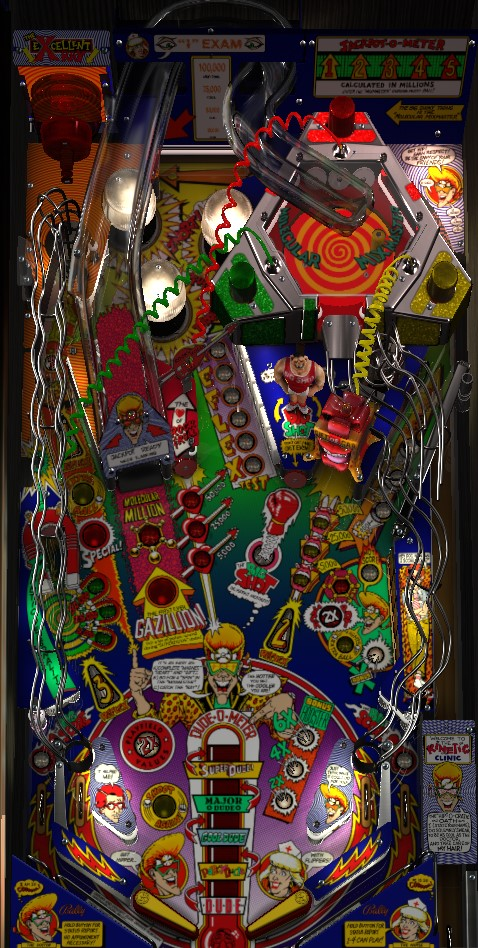

Complete the green, red, and yellow lights to bring the Mixmaster online, then shoot the ramp to light the lock, then shoot the left lane to lock the ball and start multiball. During multiball, complete the drop targets on the right to double the jackpot, then shoot the ramp repeatedly so the ball(s) hit the mixer targets enough to award the jackpot. Note that after a multiball is played, playfield scoring is doubled for the rest of the ball, including a subsequent multiball if (you can actually get 2 multiballs to happen in 1 ball).
The green shot is Magnetic Personality, a small curved lane with a magnet on the end in the lower left of the playfield. The red shot is the Heart of Rock 'n Roll, a standup target to the right of the ramp. The yellow shot is the Gift of Gab, a saucer within a present box on the right side of the playfield. Complete each shot by hitting it three times; the first is worth 5,000, the second is worth 25,000, and the third is worth 50,000. Completing all three will light the Mixmaster at the ramp for the next shot toward multiball.
Magnetic Personality is best shot from the right flipper. The feed usually goes just the right speed that it can lead to a trap on the left directly or on the right via a dead bounce.
Heart of Rock 'n Roll is best shot as an early backhand from the left flipper. Forehanding this shot frequently leads to center drains or tough slap saves.
Gift of Gab can sometimes be hit with a very early backhand from the right flipper, but is easier from the left. Gift of Gab feeds the right in lane.
One of the steepest ramps in all of pinball, pretty much impossible to backhand. If there's any chance at all that the ball doesn't make it into the Mixmaster, be ready with a side nudge to ensure the ball hits something other than the trough.
If green, red, and yellow have not been completed, every target hit in the Mixmaster scores 1,000 points. Hitting the green, red, or yellow targets within the Mixmaster 10 times each spots one hit of that shot's colour.
After green, red, and yellow have been completed (or if the last one of the three gets completed while the ball is in the Mixmaster), the Mixmaster will be "brought online". Now, each target within the Mixmaster is worth 10,000 points, and as soon as the ball gets spit out, multiball will be ready at the left lane.
During multiball, hitting the targets a certain number of times scores the Jackpot. The first Jackpot requires 10 hits, and each Jackpot after that (regardless of whether it's on the same multiball or a future one) requires 10 additional hits. If there is a maximum number of hits required for a Jackpot, it is at least 50.
If the multiball is a Super Dude multiball, the ramp and Mixmaster will be lit for the "Gazillion" shot, which is really just 500,000 points for each target hit during one trip to the Mixmaster (with a house minimum of 2,000,000 points in case the ball is spit out early. If lucky, the Gazillion can be 5 million, 8 million, 10 million, or more.
If the right drop targets are completed after the bonus has been advanced to 6X, this ramp is lit for Molecular Million, which is a standard 1,000,000 point shot.
The six white standup targets in the center of the playfield score points (5,000?) and light a letter in the word Reflex. Complete the word to qualify the Reflex 1-2-3 speed round. Reflex 1 will be lit at the left lane; there is no time limit on this shot, but as soon as Reflex 1 is hit, be ready, because you'll only have a couple seconds to shoot Reflex 2, which is the Gift of Gab. Make that shot, and Reflex 3 will be lit for only a few seconds at the Magnetic Personality shot. Complete Reflex 1-2-3 for big points- 1,000,000 by default, but the prize goes up by 250,000 for each completion of the Reflex targets over the course of the game, up to a maximum of 2,000,000.
Be mindful that because of the angle on the R-E-F-L-E-X targets, a ball that hits one on its way out from the bumpers has a high chance of draining SDTM.
Serves as the "everything scoop" of this game, a little bit.
At the start of the ball, and after each completion of the right drop targets, this saucer is lit for Bag of Tricks, a mystery award. Possible awards include:
When Extra Ball or Special are lit, they must be collected by another shot to this same saucer.
The awarded special is only given if the machine is set to not light Special on its own once the player reaches the replay score.
Dude-o-meter and Super Dude will be mentioned more later...
As mentioned in the previous section, this saucer is the Reflex 1 shot. Scroll up for a complete discussion of the Reflex 1-2-3 mode.
Once all of green/red/yellow are completed and the Mixmaster has been hit, the display will read "Execllent Ray Activated", and yes it really does have that typo. This means the left lane is lit for multiball, so shoot here immediately.
Completing the drop targets advances the bonus multiplier: first to 2X, then 4X, then 6X. Once the bonus booster is at the max of 6X (whether that came from drop targets or a Bag of Tricks mystery award), the next award is Lite Million, the award after that is Lite Extra Ball, and any completions beyond that just give points (no idea how many because it's not worth it to actually go for this many drop targets).
Any completion of the drop targets will light the Bag of Tricks mystery at the left saucer.
Completing the drop targets during multiball doubles the value of the Jackpot for the rest of that multiball.
Completing any green, red, or yellow shot lights The Big Shot. Each subsequent completion of green, red, or yellow lights The Big Shot again; it can be lit multiple times at once. Hitting the lit Big Shot once scores 20,000 points; each subsequent shot scores 20,000 more than the previous, up to a maximum of 100,000. Hitting the light Big Shot at least once also lights the out lanes for Big Score, which is 10 times the value that Big Shot was most recently hit for (meaning, up to 1,000,000).
A full plunge or a trip around the right orbit will send the ball into the I Exam, a target with a constantly changing value; it rotates between 25,000, 50,000, 75,000, and 100,000, before going back to 25,000.
The bumpers begin by being worth 500 points per hit. Shooting the right orbit can advance the bumper value for the rest of the ball up to 1,000, then 2,500, then 5,000. This process can also be completed automatically by getting "Jumper Bumpers at maximum" from the Bag of Tricks mystery.
The big thermometer in the playfield is the Dude-o-meter, and shows progress toward the Super Dude multiball that contains the Gazillion shot.
In arcade play, this is a carryover from game to game, so it's possible to walk up to a machine where the very next multiball is Super Dude, or it's possible that 5 multiballs are needed.
Most of the time when this game comes up in tournament play, one of two things will be true: either the Gazillion shot will be disabled outright, making it so all multiballs function identically, or a modification will be installed that sets up the game so that each player individually works on their own Dude-o-meter with all of them starting at Cool Dude so that Super Dude multiball requires two multiball starts for each player.
If you're playing on any of the Zen Studios Pinball FX games, my heart goes out to you: their guidelines on tables being completely reset every time a game is started make it so the Dude-o-meter starts out empty. This means that to unlock the in-game table mastery achievement, which is to start Super Dude multiball, you will need to either start an extremely unreasonable five multiballs in a single game, or bank on getting the impossibly rare Advance to Super dude award from the Bag of Tricks mystery.